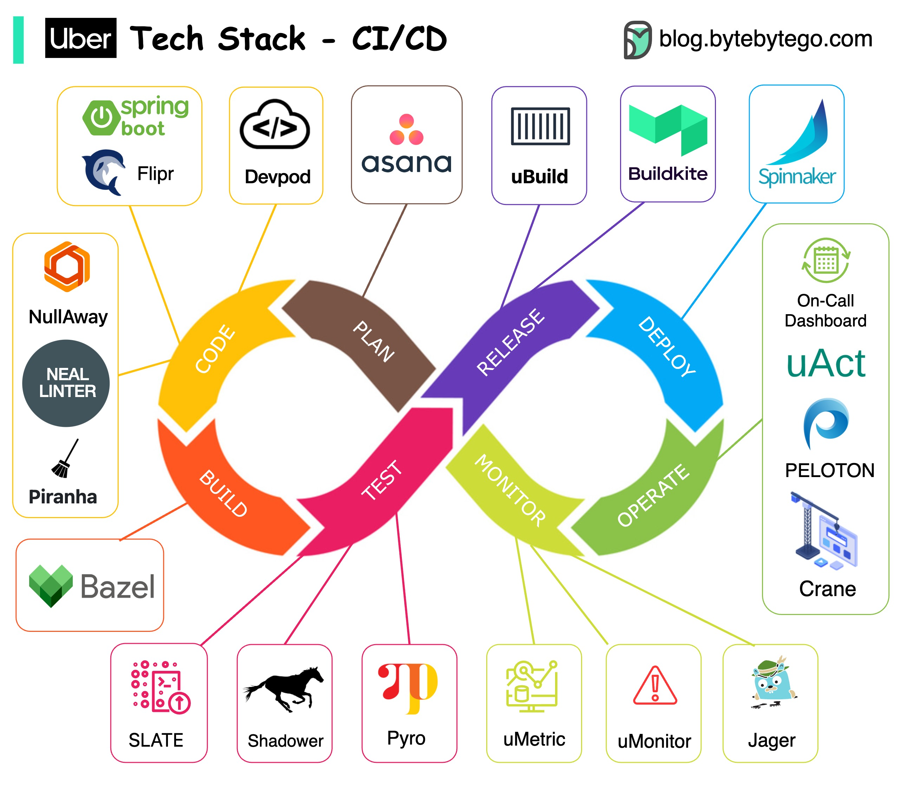

Uber is one of the most innovative companies in the engineering field. Let’s take a look at their CI/CD tech stacks.

Note: This post is based on research on Uber engineering blogs. If you spot any inaccuracies, please let us know.
Project planning: JIRA
Backend services: Spring Boot to develop their backend services. And to make things even faster, they’ve created a nifty configuration system called Flipr that allows for speedy configuration releases.
Code issues: They developed NullAway to tackle NullPointer problems and NEAL to lint the code. Plus, they built Piranha to clean out-dated feature flags.
Repository: They believe in Monorepo. It uses Bazel on a large scale.
Testing: They use SLATE to manage short-lived testing environments and rely on Shadower for load testing by replaying production traffic. They even developed Ballast to ensure a smooth user experience.
Experiment platform: it is based on deep learning and they’ve generously open-sourced parts of it, like Pyro.
Build: Uber packages their services into containers using uBuild. It’s their go-to tool, powered by Buildkite, for all the packaging tasks.
Deploying applications: Netflix Spinnaker. It’s their trusted tool for getting things into production smoothly and efficiently.
Monitoring: Uber built their own monitoring systems. They use the uMetric platform, built on Cassandra, to keep things consistent.
Special tooling: Uber relies on Peloton for capacity planning, scheduling, and operations. Crane builds a multi-cloud infrastructure to optimize costs. And with uAct and the OnCall dashboard, they’ve got event tracing and on-call duty management covered.